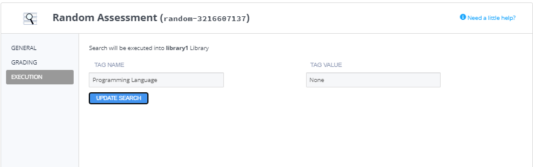
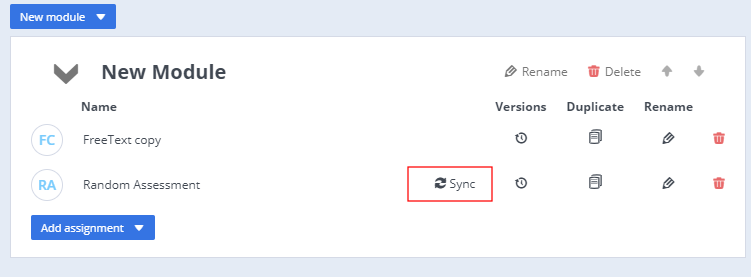
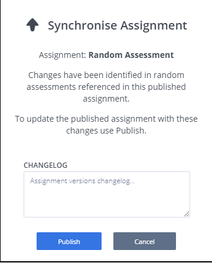
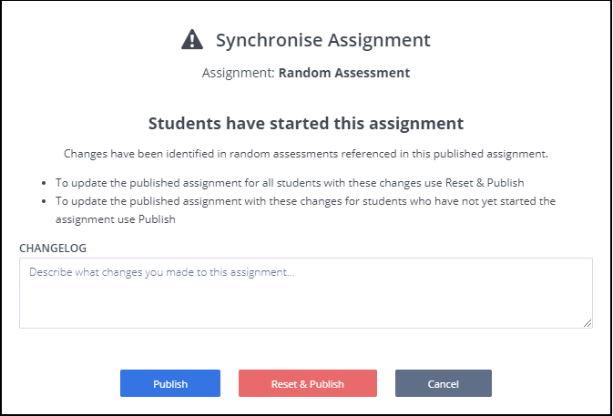

Random Assessment¶
The Random assessment type allows you to set up a group of assessments to then randomly assign one to each individual student assignment. Multiple Random assessments can be added on the same page but all of those random assessments must be of Simple layout type (1 Panel without tree). Random assessments with Complex layout (any layout other than 1 Panel without tree) can not be added on the same page or mixed with any other assessments. If you do mix Complex layout Random assessments with any other assessment, it may not function as intended and you will also get a warning when you Publish the assignment.
There is assignment level duplication prevention such that regardless of the query, Codio checks whether the library assessment IDs are unique. This prevents students from seeing the same assessment question multiple times in an assignment, as long as every question in the library is unique, and all randomized assessments are drawn from the same library. If duplicate assessments are generated, it indicates that the assessment library does not have enough unique assessments for the set of random assessment queries in the assignment.
On the General page, enter the name of your assessment that describes the test. This name is displayed in the teacher dashboard so the name should reflect the challenge and thereby be clear when reviewing.
On the Grading page, enter the amount of points to assign to the assessment. Enter the score for correctly answering the question they are assigned. You can choose any positive numeric value. If this is an ungraded assessment, enter zero (0).
Use maximum score - Toggle to enable assessment final score to be the highest score attained of all runs.
On the Execution page, browse to an assessment library where you can set up filters define the range of assessments to randomly assign. You can work from any assessment library you have access to.
Click here for more information on how to use Assessment Libraries.
Updating Random assessments¶
If you wish to update, change or review the assessments assigned to the random assessment, select the Update Search button on the Execution tab and this will open the assessment library field with the saved search parameters.

You can then review the assesments and publish the assignment if you wish in the usual manner, but if the only changes made are in relation to the random assignment and there are students who may have already started the assignment you should do go to the Edit tab and use the Sync button. If you have made other changes to the assignment though, publish in the usual manner as well and then go to the Edit tab. If students have already started the assignment, the Sync button will show
Publishing/Synchronising changes from the Course¶
If the only changes to a previously published assignment are for the random assessment(s), or if someone else in the organization has updated the assessments being used in the assignment, the changes made can be updated/synchronised from the Edit tab in the course.
A Sync button will be shown on the Edit tab for the assignment if there are changes that can be updated/synchronised.

If there are students that have already started the assignment they will not get the updates/changes unless their assignments is also reset so they will start again ‘as new’ and any previous work will be lost.
Pressing the Sync button will identify if there are students who have already started and then give you the option to reset and publish or just publish so then only students who have not started the assignment will get the update/changes
Synchronising where no students started assignment

Synchronising where students have started assignment
